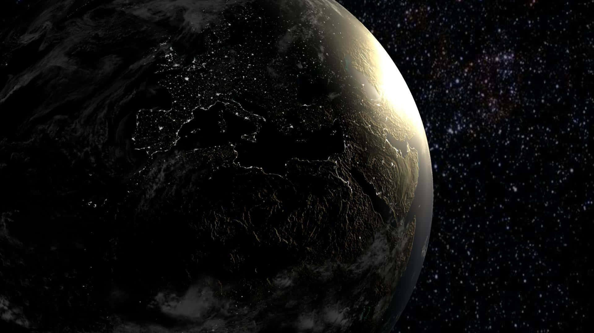

Quatro ênfases, infinitas conexões científicas.
No BCMT, você ingressa em um bacharelado interdisciplinar único com base comum sólida e define sua trajetória específica na graduação. Explore os percursos abaixo ou descubra qual combina com seus interesses.
02 · ÊNFASES
Quatro maneiras de construir o seu BCMT.
Não pense nelas como quatro cursos diferentes. São percursos dentro do mesmo bacharelado, cada um puxando a formação para um conjunto de interesses.


EXPERIMENTE
Qual ênfase vale explorar primeiro?
Marque os temas que mais chamam sua atenção. O resultado não decide sua trajetória — ele só aponta um bom lugar para começar a leitura.
SEU PONTO DE PARTIDA
Escolha alguns interesses acima.
Você pode combinar quantos quiser.
03 · POR DENTRO DOS PERCURSOS
Mais do que nomes: o foco de cada formação.
01 / 04
CMT — Puro
É o percurso de formação geral da matriz atual. Mantém o caráter interdisciplinar do bacharelado e oferece espaço amplo para construir uma trajetória entre matemática, física, computação e ciências da Terra.
- Carga horária
- 2.400 h
- Créditos mínimos
- 116
- Livre escolha
- 32 créditos
02 / 04
Análise de Dados
Direciona a formação para modelagem e processamento da informação, com presença forte de programação, estruturas de dados, matemática e estatística aplicada.
- Carga horária
- 2.400 h
- Créditos mínimos
- 126
- Livre escolha
- 8 créditos
- Programação e fundamentos computacionais
- Modelagem matemática
- Análise quantitativa e estatística
03 / 04
Sensoriamento Remoto e Geoprocessamento
Forma uma base para aquisição, processamento e interpretação de dados espaciais, combinando imagens orbitais, Sistemas de Informações Geográficas e leitura das dinâmicas da superfície terrestre.
- Carga horária
- 2.400 h
- Créditos mínimos
- 123
- Livre escolha
- 14 créditos
- Imagens e observação da Terra
- Sistemas de Informações Geográficas
- Análise espacial e mapeamento
04 / 04
Patrimônio Natural
Concentra-se na compreensão, valorização e conservação da geodiversidade, conectando conhecimentos de geologia e meio físico a temas como patrimônio geológico e geoparques.
- Carga horária
- 2.400 h
- Créditos mínimos
- 117
- Livre escolha
- 10 créditos
- Geodiversidade e patrimônio
- Geologia e meio físico
- Conservação e geoparques